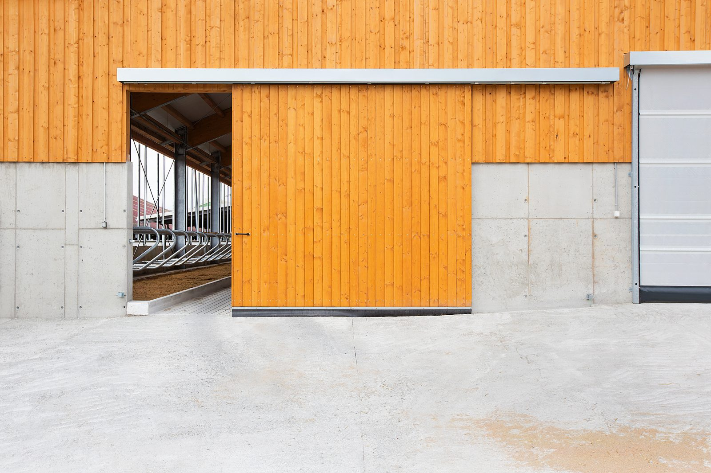
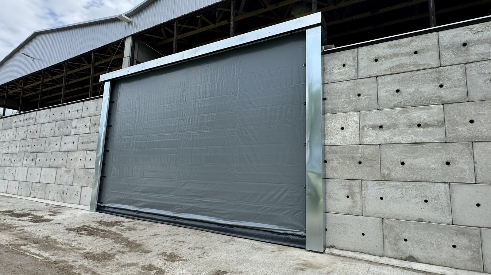
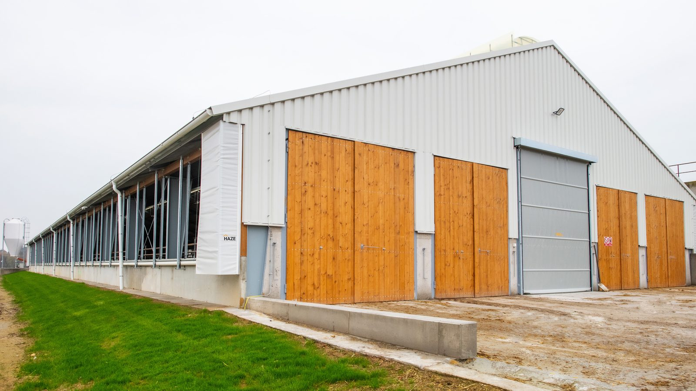
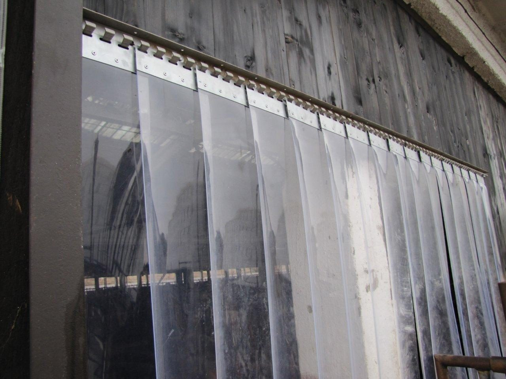

Ostatní vrata a průchody.
Kromě rolovacích vrat vyrábíme skládací vrata pro nejširší vjezdy, posuvná a křídlová vrata a lamelové průchody. Základ tvoří ocelová žárově zinkovaná konstrukce. Níže najdete detail každého provedení i srovnání.

Každé provedení popsané.

Skládací vrata
Řešení pro vjezdy, které jsou příliš široké pro rolovací vrata - skládací vrata nejsou rolovací. Mají menší hmotnost systému a do šíře 10 m nepotřebují opěrné profily. Vždy obsahují průmyslový pohon. Při bočním vedení plachet v uzavřených profilech systém odolává i silnému větru. Výplň tvoří PVC plachta nebo síť s možností došponování, montáž provádíme zevnitř i zvenčí. Pozor - na každý metr šíře otvoru je potřeba počítat s nadpražím; přesnou tabulku doplníme.
| Ovládání | Průmyslový pohon |
|---|---|
| Konstrukce | Bez opěrných profilů do 10 m, boční vedení v uzavřených profilech |
| Výplň | PVC plachta nebo síť (možnost došponování) |
| Max. šíře | vnitřní otvor 15 × 6 m, vnější 10 × 6 m |
| Hodí se na | Velmi široké vjezdy a haly |
Posuvná vrata
Vrata s ocelovou žárově zinkovanou konstrukcí a deskovou výplní, která se posouvají do strany - hodí se tam, kde není místo pro vykývnutí křídel. Vyrábíme je v jednodílném i dvoudílném provedení. Na požádání doplníme zastřešení střechy.
| Konstrukce | Ocel žárově zinkovaná, desková výplň |
|---|---|
| Provedení | Jednodílné i dvoudílné |
| Otevírání | Posuvné do strany |
| Volitelně | Zastřešení střechy na požádání |
| Hodí se na | Vjezdy, kde není místo pro vykývnutí křídel |

Křídlová vrata otvíravá
Klasická kyvná otevírací vrata s ocelovou žárově zinkovanou konstrukcí. Vyrábíme je v jednokřídlém i dvoukřídlém provedení. Hodí se na běžné vjezdy, kde je kolem dost místa pro vykývnutí křídel.
| Konstrukce | Ocel žárově zinkovaná |
|---|---|
| Provedení | Jednokřídlé i dvoukřídlé |
| Otevírání | Kyvné, otvíravé |
| Rozměry | Šíře otvoru do 4 m, výška otvoru do 4 m |
| Hodí se na | Vjezdy s dostatkem místa pro vykývnutí křídel |

Lamelové průchody
Tam, kde nejsou potřeba pevná vrata, je nahradíme lamelovými průchody. Vyrábíme tři provedení - s odepínacími závěsy, s pevnými závěsy a průchod posuvný. Lamely dodáváme v šířích 200, 300 a 400 mm a tloušťkách 2, 3, 4 a 5 mm, do maximální výšky průchodu 2500 mm.
| Provedení | S odepínacími závěsy, s pevnými závěsy, průchod posuvný |
|---|---|
| Šíře lamel | 200 / 300 / 400 mm |
| Tloušťka lamel | 2 / 3 / 4 / 5 mm |
| Max. výška průchodu | 2500 mm |
| Hodí se na | Vnitřní průchody mezi sekcemi, kde stačí lehký uzávěr |
Která vrata vybrat.
Rozhoduje šířka vjezdu, kolik je kolem místa a zda jde o běžný vjezd, vnitřní průchod nebo speciální provoz. U každého provedení vidíte ovládání, klíčový parametr i kam se hodí.
-
Skládací
Nejširší vjezdy.
PVC plachta nebo síť pro vjezdy příliš široké na rolovací vrata - vnitřní otvor až 15 × 6 m.
- Ovládání
- Průmyslový pohon
- Parametr
- Vnitřní 15 × 6 m, vnější 10 × 6 m
- Hodí se na
- Velmi široké vjezdy a haly
-
Posuvná
Bez místa pro křídla.
Posun do strany, jedno- i dvoudílné, ocelová žárově zinkovaná konstrukce s deskovou výplní.
- Ovládání
- Posuv do strany
- Parametr
- Jedno- i dvoudílné
- Hodí se na
- Vjezdy bez místa pro křídla
-
Křídlová
Klasický vjezd.
Kyvná otvíravá vrata tam, kde je kolem dost místa pro vykývnutí křídel.
- Ovládání
- Kyvné, otvíravé
- Parametr
- Š. otvoru do 4 m, v. do 4 m
- Hodí se na
- Vjezdy s místem pro vykývnutí
-
Lamelové průchody
Lehké dělení.
S odepínacími nebo pevnými závěsy, případně posuvný průchod. Lamely 200-400 mm.
- Provedení
- Odepínací / pevné / posuvný
- Parametr
- Průchod do 2500 mm
- Hodí se na
- Vnitřní průchody mezi sekcemi
Vyplňte formulář a my se vám ozveme do následujícího pracovního dne.
Co se ptáte nejčastěji.
Z čeho je konstrukce vrat?
Základem je ocelová žárově zinkovaná konstrukce, u většiny provedení s deskovou výplní. Konstrukce je navržená pro provoz ve stáji i v průmyslu.
Jaký je rozdíl mezi posuvnými a křídlovými vraty?
Posuvná vrata se posouvají do strany, takže nepotřebují místo pro vykývnutí - hodí se do těsných míst. Vyrábíme je v jednodílném i dvoudílném provedení. Křídlová vrata se otevírají kyvně do strany, potřebují kolem sebe volný prostor a vyrábíme je v jednokřídlém i dvoukřídlém provedení.
Kdy zvolit skládací vrata?
Když je vjezd příliš široký pro rolovací vrata. Skládací vrata zvládnou vnitřní otvor až 15 × 6 m (vnější 10 × 6 m), do šíře 10 m bez opěrných profilů, a vždy obsahují průmyslový pohon.
Co jsou lamelové průchody?
Lehčí náhrada pevných vrat tam, kde stačí jen dělení prostoru. Vyrábíme je s odepínacími nebo pevnými závěsy a jako posuvný průchod, s lamelami šíře 200-400 mm a tloušťky 2-5 mm, do výšky průchodu 2500 mm.